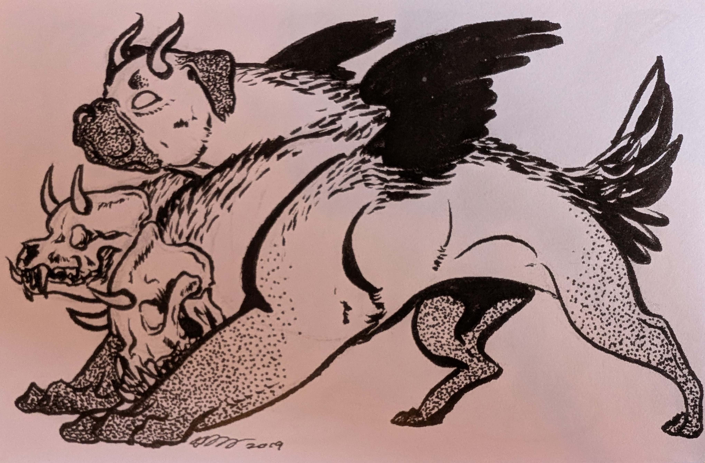

On January 13th, 199?, a paranormal incident was reported at Paranormal Inc.’s office. The full investigative team was immediately dispatched. The team found multiple ghosts escaping from a compromised ghost containment unit on premise.
Within several hours, the containment systems were brought back online and the ghosts were (mostly) recovered. The cause of the containment breach was an ex-employee who contracted a demon to disrupt the municipal power connection to the containment units.
A dancing and brass-playing ghost from the 40s. Originally found several years ago at a Squirrel Nut Zippers concert. The ghost opened for the band, but would not leave the stage. Peter had been dragged to the concert by his wife, so he captured the ghost. Escaped from containment unit Z during the incident and stole wontons from the bullpen snack table.
Before the Zoot Ghost escaped from the bullpen, Doris possessed the ghost, pulling out a (real) checkered bracelet often worn by second and third wave ska fans.
Anderson dug into a box of records stashed under Zora’s desk to pull out two items from the same time as the Zoot Ghost’s original capture. He found a torn motivational poster (“Reach for the…”) and a faded old bonus check (uncashed).
A guest at the party, present in the bullpen. Initially a weak suspect due to her long-standing fascination with paranormal haunting and her knowledge of check fraud vis-a-vis the old bonus check. Cleared of suspicion. She’s just weird. (ed: and probably a con artist)
A young serving boy dubbed Henry who died during WW2; also escaped from containment unit Z. Found carrying spectral drinks through the back room; later re-appeared sobbing in a corner.
Remi sensed Henry’s sadness and tied to it an object in the room with similar feelings. The group found a page of a performance evaluation of a former employee. The employee would take long lunch breaks, record over audio tapes, and play really loud ska music. They also found a photo of former employees, including someone with a checkered bracelet.
(ed: We all know that Elaine is the office secretary, do I have to explain why she was here?)
In discussion with the investigators in the back room, Elaine identified the employee from the photo. She didn’t remember his real name (“we always used his nickname”), but she did remember that they hooked up an 8 track system from their own car to play music in the bullpen.
Elaine gets a call from Mr. Paranormal, but Zora intercepts the call. Mr. Paranormal finds the employee’s business card in his wallet; it’s Archibald, who he has nicknamed “Archie Archivist”.
Found in the custodial closet shower washing off wine from a poltergeist event. Interview with Peter revealed that paperwork for the next clue had been recently relocated from an iron maiden in the records room. (ed: I didn’t mention anything about me being really drunk. Should I have done that? I don’t want to get in trouble.)
Slobbered all over Peter in the back hallway. Another escapee from containment unit Z. (ed: a good boy)
A set of case files, client letters, and faxes. All info related to ska cases are missing. Found by Bobby several weeks ago in an iron maiden, relocated to the bathroom. (ed: why do we have so many ska cases?)
A box of old mementos owned by Archie, left behind in the big meeting room.
A box reeking of sulfur appeared in a demonic summoning circle related to the demon Naberius. Inside the box was an unpaid invoice, a contract written in Infernal, a wad of cash, and a letter.
“I signed a contract with a demon. You won’t read this til it's done its work. This will make sure you never forget my name again - Archibald.”
Archie was furious about being fired. He scraped together money to sign a contract with the demon Naberius, who retrieves lost titles and honors. The demon cursed the municipal power supply connection to the containment units. As this happened on Friday night, the ghosts would have had all weekend to escape and cause havoc.
Luckily, the entire team was present in the office due to Doris’s retirement party. Dr. Doc was able to use Doris’s etco-spectro-electro-magnetivity to jury rig a new power connection to the grid. This involved severe electrocution for Doris. Efforts to fix the connection properly are ongoing.
The team seems to have acquired cash (ed: according to Remi, “Naberius doesn’t accept USD”, whatever that means) to pay the outstanding invoice to prevent the power from being disabled in the imminent future. Revenue estimate ongoing because it’s unclear how many bills are still outstanding. (ed: do we have an accountant? Or a bookkeeper?)
Doris has been extracted from the power grid. During this shocking experience (ed: her words) she realized that she can write a new bucket list post-mortem. She is taking her disability time to get a head start on completing her new goals.
The demonic incursion has led to controversy within the office. Remi is really worried about this new category of paranormal things, he thinks that his “exercise to exorcise” blueprint might not work on them? Dr. Doc is thrilled about this and she’s buying every demonicon she can find.
Anderson apparently lost a lot of money on the case and he’s pretty bummed about it. (ed: He and Zora keep talking about doing check fraud. Did they learn that from Mme. Nightwing? Should I say anything to anyone?)
The ghost dog Zeppelin was not returned to containment unit, as Zora has apparently adopted the dog. She reports that Zeppelin is a very good boy.
Peter has been missing his long lunches with Doris. Now he keeps showing up to Zora’s desk and asking her to go to lunch with him instead. Every day they play fetch in the park for hours with Zeppelin.